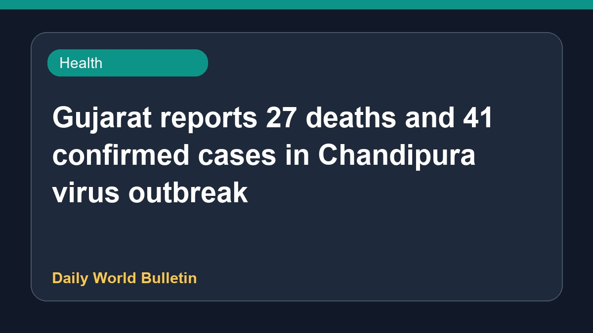

Gujarat reports 27 deaths and 41 confirmed cases in Chandipura virus outbreak

The Gujarat government has reported that the Chandipura virus outbreak has claimed 27 lives in the state, with a total of 41 confirmed cases recorded. Multiple reports indicate that numerous children have been affected by the viral return over a span of several weeks. Experts are currently examining the situation regarding how the infection spreads, while health advisories continue to highlight symptoms, causes, treatment, and prevention methods to manage the ongoing public health concern.
Original source: Health News Sources
Chandipura outbreak claimed 27 lives in Gujarat: Govt - The Times of India ↗
Chandipura outbreak claimed 27 lives in Gujarat: Govt - The Times of India ↗